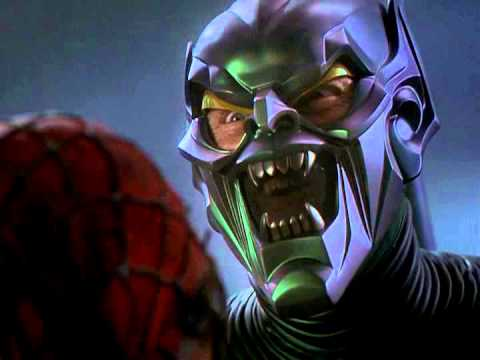
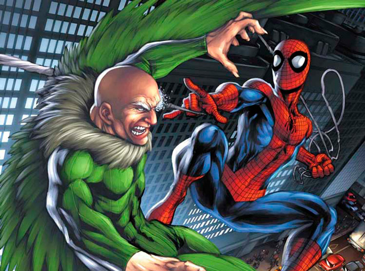
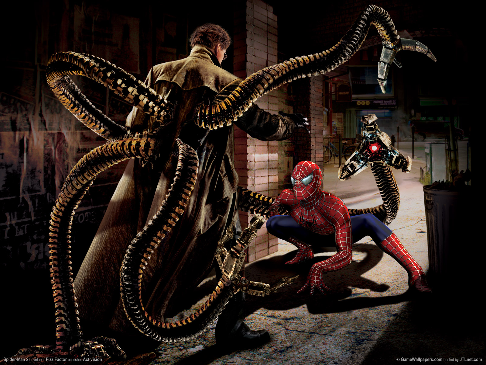
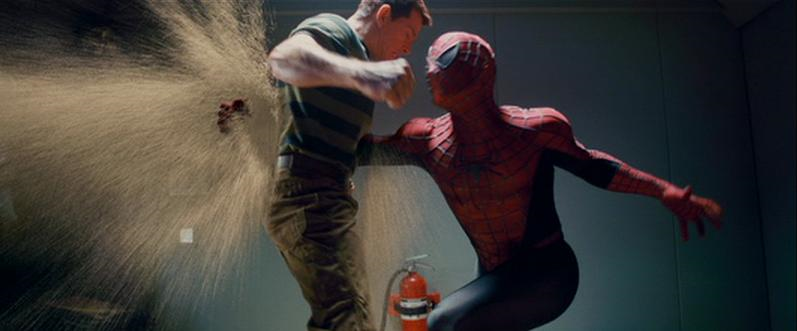
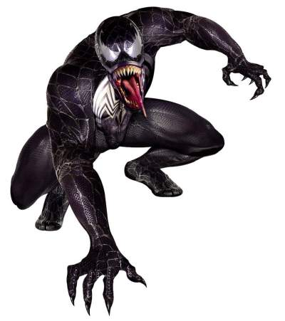
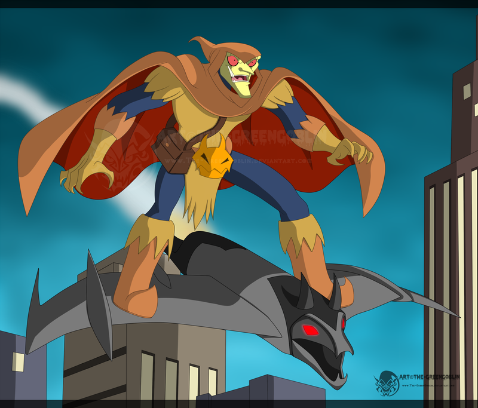
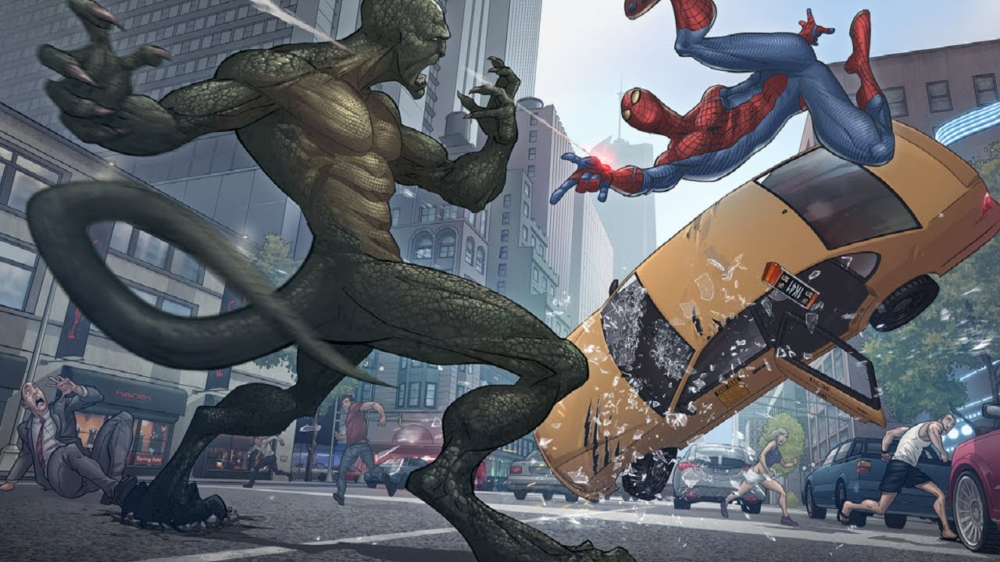

Duende Verde

-
Originalmente era un científico normal y ambicioso empresario, Norman Osborn utiliza una fórmula experimental que le da superpoderes pero también lo conduce a la locura. Cuando Spider-Man frustra sus planes para ocupar el cargo del jefe de la mafia de Nueva York, se dedica a destruir completamente la vida de Spider-Man.
Es el primer supervillano en descubrir la identidad secreta de Spider-Man. Su rencor mutuo se hace personal cuando Osborn mata a Gwen Stacy, novia de Peter Parker y su primer amor verdadero.
Buitre

-
El anciano Adrian Toomes se volvió a la vida del crimen después de que un socio de negocios lo traicionó. Inventó un paquete antigravedad, alas para volar más rápido y un disfraz de pájaro.
Doctor Octopus

-
El anciano Adrian Toomes se volvió a la vida del crimen después de que un socio de negocios lo traicionó. Inventó un paquete antigravedad, alas para volar más rápido y un disfraz de pájaro.
El Hombre de Arena

-
Flint Marko (alias El Hombre de Arena) tiene la habilidad de transformarse en una sustancia similar a la arena que puede endurecerse, dispersarse o tomar la forma que desee. Posee una gran fuerza física, varias veces superior a la de Spider-man (hasta 100 toneladas en su máxima densidad).
También puede moldear su cuerpo arenoso a su manera. Debido a un experimento con moléculas de arena, Flint se fusionó con la arena molecularmente y cada parte de su cuerpo está constituido principalmente de arena.
Eddie Brock (Venom)

-
Edward «Eddie» Brock Jr. era un periodista respetable del «New York Globe», competidor del diario Daily Bugle, que alcanzó la cima de su carrera al haber realizado un reportaje en el que supuestamente revelaba la identidad del criminal conocido como Sin-Eater. Pero su vida dio un inesperado giro cuando Spider-Man desenmascaró al auténtico Sin-Eater.
Despedido, abandonado por su mujer y apartado por sus colegas, se ve obligado a trabajar en periódicos sensacionalistas de segunda fila para lograr subsistir. Durante esta época va acumulando un tremendo odio hacia Spider-Man, al considerarle origen de sus males.
Hobgoblin

-
Mientras escapaba de Spider-Man, un vulgar ladrón se topó accidentalmente con la guarida del viejo Duende Verde, Norman Osborn. El ladrón, descubriendo el valor que tenía su hallazgo, decidió ofrecerla en venta al mejor postor. El comprador fue un ambicioso hombre de negocios llamado Roderick Kingsley.
MacGargan (El Escorpión) o (Venom III)

-
MacDonald «Mac» Gargan solía ser un detective privado el cual fue sobornado por J. J. Jameson para que descubriera el método por el cual Peter Parker (Spider-Man) lograba tomar fotos de si mismo, pero ese pedido no pudo ser cumplido. Después de un tiempo Jameson le ofreció dinero a Gargan para someterse a un experimento, con el que Jameson planeaba dotar a Gargan de un gran poder para así deshacerse de Spider-Man, el experimento fue conducido por el Dr. Farley Stillwell.
Lagarto

-
Tras perder su brazo en la guerra, el cirujano Curt Connors se especializó en la habilidad de los lagartos para regenerar miembros perdidos. Connors preparó un suero que le dotaría su brazo perdido, pero en vez de eso, Curt se convirtió en un lagarto gigante.Tras ser ayudado por Spider-Man, Connors volvió a la normalidad, pero cuando está bajo mucho estrés, Curt vuelve a su forma animal.